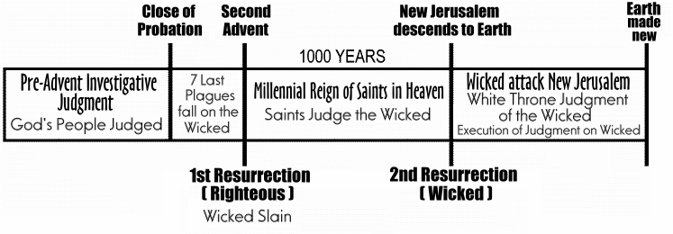

http://biblelight.net
The Scriptures on Judgment
Who will be judged?
Psa 7:11 God judgeth the righteous, and God is angry with the wicked every day.
Eccl 3:17 I said in mine heart, God shall judge the righteous and the wicked: for there is a time there for every purpose and for every work.
Rom 14:10 But why dost thou judge thy brother? or why dost thou set at nought thy brother? for we shall all stand before the judgment seat of Christ.
2 Cor 5:10 For we must all appear before the judgment seat of Christ; that every one may receive the things done in his body, according to that he hath done, whether it be good or bad.
Acts 10:42 And he commanded us to preach unto the people, and to testify that it is he which was ordained of God to be the Judge of quick [living] and dead.
2 Tim 4:1 I charge thee therefore before God, and the Lord Jesus Christ, who shall judge the quick [living] and the dead at his appearing and his kingdom;
Heb 9:27 And as it is appointed unto men once to die, but after this the judgment:
Heb 12:23 To the general assembly and church of the firstborn, which are written in heaven, and to God the Judge of all, and to the spirits of just men made perfect,
Answer: Everyone, both the righteous and wicked, the living and dead, will be judged.
What will be the standard of Judgment?
1 John 3:4 Whosoever committeth sin transgresseth also the law: for sin is the transgression of the law.
1 John 3:5 And ye know that he was manifested to take away our sins; and in him is no sin.
1 John 3:6 Whosoever abideth in him sinneth not: whosoever sinneth hath not seen him, neither known him.James 2:12 So speak ye, and so do, as they that shall be judged by the law of liberty.
Eccl 12:13 Let us hear the conclusion of the whole matter: Fear God, and keep his commandments: for this is the whole duty of man.
Eccl 12:14 For God shall bring every work into judgment, with every secret thing, whether it be good, or whether it be evil.1 John 2:3 And hereby we do know that we know him, if we keep his commandments.
1 John 2:4 He that saith, I know him, and keepeth not his commandments, is a liar, and the truth is not in him.
1 John 2:5 But whoso keepeth his word, in him verily is the love of God perfected: hereby know we that we are in him.Rev 14:12 Here is the patience of the saints: here are they that keep the commandments of God, and the faith of Jesus.
Answer: The 10 commandments of God are the standard of judgment.
Who is judged first, the righteous or the wicked?
1 Pet 4:17 For the time is come that judgment must begin at the house of God: and if it first begin at us, what shall the end be of them that obey not the gospel of God?
1 Tim 5:24 Some men's sins are open beforehand, going before to judgment; and some men they follow after.
1 Tim 5:25 Likewise also the good works of some are manifest beforehand; and they that are otherwise cannot be hid.Answer: The righteous believers are judged first and rewarded, and then later the wicked are sentenced and condemned.
Who is the presiding Judge?
The courtroom scene in Daniel:
Dan 7:9 I beheld till the thrones werecast down[set in place], and the Ancient of days did sit, whose garment was white as snow, and the hair of his head like the pure wool: his throne was like the fiery flame, and his wheels as burning fire.
Dan 7:10 A fiery stream issued and came forth from before him: thousand thousands ministered unto him, and ten thousand times ten thousand stood before him: ...A similar scene in Revelation:
Rev 4:2 And immediately I was in the spirit; and, behold, a throne was set in heaven, and one sat on the throne.
Rev 4:3 And he that sat was to look upon like a jasper and a sardine stone: and there was a rainbow round about the throne, in sight like unto an emerald.Rev 5:6 And I beheld, and, lo, in the midst of the throne and of the four beasts, and in the midst of the elders, stood a Lamb as it had been slain, having seven horns and seven eyes, which are the seven Spirits of God sent forth into all the earth.
Rev 5:7 And he came and took the book out of the right hand of him that sat upon the throne.Rev 5:11 And I beheld, and I heard the voice of many angels round about the throne and the beasts and the elders: and the number of them was ten thousand times ten thousand, and thousands of thousands;
Answer: The Ancient of Days (God the Father). Jesus is the Lamb who takes the book from the hand of Father on the throne.
Who is our Advocate (Defense Attorney) in the Judgment of the professed Saints?
Heb 9:24 For Christ is not entered into the holy places made with hands, which are the figures of the true; but into heaven itself, now to appear in the presence of God [the Father] for us:
1 John 2:1 My little children, these things write I unto you, that ye sin not. And if any man sin, we have an advocate with the Father, Jesus Christ the righteous:
1 John 2:2 And he is the propitiation for our sins: and not for ours only, but also for the sins of the whole world.Answer: Jesus Christ is our Defense Attorney before God the Father.
Who is the Accuser (Prosecuting Attorney) of the professed Saints?
Rev 12:9 And the great dragon was cast out, that old serpent, called the Devil, and Satan, which deceiveth the whole world: he was cast out into the earth, and his angels were cast out with him.
Rev 12:10 And I heard a loud voice saying in heaven, Now is come salvation, and strength, and the kingdom of our God, and the power of his Christ: for the accuser of our brethren is cast down, which accused them before our God day and night.Answer: Satan is the Accuser (Prosecuting Attorney).
How will evidence be given in the Judgment of the professed Saints?
Dan 7:10 ... the judgment was set, and the books were opened.
Mal 3:16 Then they that feared the LORD spake often one to another: and the LORD hearkened, and heard it, and a book of remembrance was written before him for them that feared the LORD, and that thought upon his name.
Mal 3:17 And they shall be mine, saith the LORD of hosts, in that day when I make up my jewels; and I will spare them, as a man spareth his own son that serveth him.Exo 32:33 And the LORD said unto Moses, Whosoever hath sinned against me, him will I blot out of my book.
Heb 12:1 Wherefore seeing we also are compassed about with so great a cloud of witnesses, let us lay aside every weight, and the sin which doth so easily beset us, and let us run with patience the race that is set before us,
Rev 3:5 He that overcometh, the same shall be clothed in white raiment; and I will not blot out his name out of the book of life, but I will confess his name before my Father, and before his angels.
Rev 5:1 And I saw in the right hand of him that sat on the throne a book written within and on the backside, sealed with seven seals.
Rev 21:27 And there shall in no wise enter into it any thing that defileth, neither whatsoever worketh abomination, or maketh a lie: but they which are written in the Lamb's book of life.
Answer: The record books of heaven on the professed saints will be opened in evidence before the court: the Lamb's book of life, and the book of remembrance of their deeds in service to the Lord, faithfully recorded by witnessing angels. The book with 7 seals in Revelation chapters 5 thru 8 is the Lamb's book of life (Phil. 4:3, Rev. 3:5, 13:8, 17:8, 20:12,15, 21:27, 22:19). It is the last will and testament of Jesus Christ (Heb. 9:14-17), the new covenant, that lists those who will inherit eternal life and the kingdom of God. When the reading of the Lamb's book of life ends, probation for humanity has come to a close, as all those who inherit have been identified.
God does not need to keep books for Himself, but rather they are kept for others who do not have His omniscience. These books are available to the heavenly hosts in the court for their investigation, that they may know that God is just.
What events follow the beginning of the Investigative Judgment of the professed Saints?
Dan 7:10 ... the judgment was set, and the books were opened.
Dan 7:11 I beheld then because of the voice of the great words which the horn spake: I beheld even till the beast was slain, and his body destroyed, and given to the burning flame.
Dan 7:12 As concerning the rest of the beasts, they had their dominion taken away: yet their lives were prolonged for a season and time.
Dan 7:13 I saw in the night visions, and, behold, one like the Son of man came with the clouds of heaven, and came to the Ancient of days, and they brought him near before him.
Dan 7:14 And there was given him dominion, and glory, and a kingdom, that all people, nations, and languages, should serve him: his dominion is an everlasting dominion, which shall not pass away, and his kingdom that which shall not be destroyed.2 Th 2:8 And then shall that Wicked be revealed, whom the Lord shall consume with the spirit of his mouth, and shall destroy with the brightness of his coming:
Answer: In Daniel 7 the destruction of the little horn power comes after the opening of the books for the judgment of the Saints. So the books are opened for investigation, and judgment begins before the Second Advent, which is when the little horn / antichrist will be consumed. This judgment then is rightly called a Pre-advent Investigative Judgment. The kingdom parable of the wedding of the King's Son in Matt 22:1-13 illustrates this clearly when the King examines the wedding guests for the garment that He provided. Those not wearing the wedding garment are not permitted to attend the wedding supper, and are cast into outer darkness instead. This parable refers to the wedding supper of the Lamb, and the garment is Christ's righteousness, which is provided to those with faith. This examination, or judgment for fitness to attend the wedding supper, precedes the second coming, which is when the goats will be separated from the sheep.
Is there a specific day set for the revelation of God's judgment?
Acts 17:31 Because he hath appointed a day, in the which he will judge the world in righteousness by that man whom he hath ordained; whereof he hath given assurance unto all men, in that he hath raised him from the dead.
Rom 2:5 But after thy hardness and impenitent heart treasurest up unto thyself wrath against the day of wrath and revelation of the righteous judgment of God;
Rom 2:16 In the day when God shall judge the secrets of men by Jesus Christ according to my gospel.
Answer: A day has indeed been appointed for the judgment of God to be revealed.
When is that day of judgment, when the Saints of God are judged righteous and rewarded by inheriting the Kingdom of God forever?
Mat 25:31 When the Son of man shall come in his glory, and all the holy angels with him, then shall he sit upon the throne of his glory:
Mat 25:32 And before him shall be gathered all nations: and he shall separate them one from another, as a shepherd divideth his sheep from the goats:
Mat 25:33 And he shall set the sheep on his right hand, but the goats on the left.
Mat 25:34 Then shall the King say unto them on his right hand, Come, ye blessed of my Father, inherit the kingdom prepared for you from the foundation of the world:John 6:39 And this is the Father's will which hath sent me, that of all which he hath given me I should lose nothing, but should raise it up again at the last day.
John 6:40 And this is the will of him that sent me, that every one which seeth the Son, and believeth on him, may have everlasting life: and I will raise him up at the last day.Acts 3:19 Repent ye therefore, and be converted, that your sins may be blotted out, when the times of refreshing shall come from the presence of the Lord;
Acts 3:20 And he shall send Jesus Christ, which before was preached unto you:2 Tim 4:1 I charge thee therefore before God, and the Lord Jesus Christ, who shall judge the quick [living] and the dead at his appearing and his kingdom;
Rev 11:18 And the nations were angry, and thy wrath is come, and the time of the dead, that they should be judged, and that thou shouldest give reward unto thy servants the prophets, and to the saints, and them that fear thy name, small and great; and shouldest destroy them which destroy the earth.
Rev 14:6 And I saw another angel fly in the midst of heaven, having the everlasting gospel to preach unto them that dwell on the earth, and to every nation, and kindred, and tongue, and people,
Rev 14:7 Saying with a loud voice, Fear God, and give glory to him; for the hour of his judgment is come: and worship him that made heaven, and earth, and the sea, and the fountains of waters.(This warning that the hour of judgment is come; precedes the second coming, and warns those living that their judgment is underway, but will soon come to a close.)
Answer: The Saints will have been judged righteous before the second coming of Jesus (Mat 25:31), which is when the righteous (sheep) and the wicked (goats) will be forever separated, and God's judgment revealed, and His true Saints rewarded with eternal life.
What is the fate of the living wicked at the second coming of Jesus Christ?
Mat 13:41 The Son of man shall send forth his angels, and they shall gather out of his kingdom all things that offend, and them which do iniquity;
Mat 13:42 And shall cast them into a furnace of fire: there shall be wailing and gnashing of teeth.
Mat 13:43 Then shall the righteous shine forth as the sun in the kingdom of their Father. Who hath ears to hear, let him hear.Mat 13:49 So shall it be at the end of the world: the angels shall come forth, and sever the wicked from among the just,
Mat 13:50 And shall cast them into the furnace of fire: there shall be wailing and gnashing of teeth.Rev 19:21 And the remnant were slain with the sword of him that sat upon the horse (Jesus), which sword proceeded out of his mouth: and all the fowls were filled with their flesh.
Answer: At the second coming of Jesus the living wicked will all be slain.
Will anyone's fate be changed after the Pre-advent Investigative Judgment of the Saints and the second coming of Jesus Christ?
Rev 22:11 He that is unjust, let him be unjust still: and he which is filthy, let him be filthy still: and he that is righteous, let him be righteous still: and he that is holy, let him be holy still.
Rev 22:12 And, behold, I come quickly; and my reward is with me, to give every man according as his work shall be.Answer: Everyone's fate will have been decided by the court of heaven before the second coming of Jesus, and nothing will change the verdict after the Pre-advent Investigative Judgment of the Saints has concluded (the close of probation). While only the books regarding the Saints of God have been examined in the Pre-advent Investigative Judgment, the wicked stand condemned by not having sought the defense of the righteousness of Jesus Christ, so their sins are not covered by Christ's righteousness, and they must bear responsibility for their own sins.
What is the reward of the faithful and righteous Saints of God?
Rev 22:14 Blessed are they that do his commandments, that they may have right to the tree of life, and may enter in through the gates into the city.
John 5:24 Verily, verily, I say unto you, He that heareth my word, and believeth on him that sent me, hath everlasting life, and shall not come into condemnation; but is passed from death unto life.
John 10:27 My sheep hear my voice, and I know them, and they follow me:
John 10:28 And I give unto them eternal life; and they shall never perish, neither shall any man pluck them out of my hand.Rom 6:23 For the wages of sin is death; but the gift of God is eternal life through Jesus Christ our Lord.
Answer: The Saints of God will be rewarded with access to the tree of life, and by eating the fruit thereof, they will live forever. (The wicked, who will never be given access to the tree of life, will be denied eternal life, so they must perish.)
Who will judge the wicked?
Psa 149:5 Let the saints be joyful in glory: let them sing aloud upon their beds.
Psa 149:6 Let the high praises of God be in their mouth, and a twoedged sword in their hand;
Psa 149:7 To execute vengeance upon the heathen, and punishments upon the people;
Psa 149:8 To bind their kings with chains, and their nobles with fetters of iron;
Psa 149:9 To execute upon them the judgment written: this honour have all his saints. Praise ye the LORD.Dan 7:22 Until the Ancient of days came, and judgment was given to the saints of the most High; and the time came that the saints possessed the kingdom.
Mat 19:28 And Jesus said unto them, Verily I say unto you, That ye which have followed me, in the regeneration when the Son of man shall sit in the throne of his glory, ye also shall sit upon twelve thrones, judging the twelve tribes of Israel.
1 Cor 6:2 Do ye not know that the saints shall judge the world? and if the world shall be judged by you, are ye unworthy to judge the smallest matters?
1 Cor 6:3 Know ye not that we shall judge angels? how much more things that pertain to this life?Answer: The judgment of the wicked will be given to the Saints of God for their examination and ratification.
When will the judgment of the wicked by the Saints occur?
John 5:28 Marvel not at this: for the hour is coming, in the which all that are in the graves shall hear his voice,
John 5:29 And shall come forth; they that have done good, unto the resurrection of life; and they that have done evil, unto the resurrection of damnation.Rev 20:4 And I saw thrones, and they sat upon them, and judgment was given unto them: and I saw the souls of them that were beheaded for the witness of Jesus, and for the word of God, and which had not worshipped the beast, neither his image, neither had received his mark upon their foreheads, or in their hands; and they lived and reigned with Christ a thousand years.
Rev 20:5 But the rest of the dead lived not again until the thousand years were finished. This is the first resurrection.
Rev 20:6 Blessed and holy is he that hath part in the first resurrection: on such the second death hath no power, but they shall be priests of God and of Christ, and shall reign with him a thousand years.Answer: During the millennium the Saints will judge the wicked. The righteous dead will be resurrected at the beginning of the thousand years to participate in this judgment of the wicked, but the wicked will not be resurrected until after the millennium and the examination of the evidence against the wicked has been completed.
How will the evidence against the wicked be presented?
Rev 20:12 And I saw the dead, small and great, stand before God; and the books were opened: and another book was opened, which is the book of life: and the dead were judged out of those things which were written in the books, according to their works.
Rev 20:13 And the sea gave up the dead which were in it; and death and hell delivered up the dead which were in them: and they were judged every man according to their works.Psa 69:27 Add iniquity unto their iniquity: and let them not come into thy righteousness.
Psa 69:28 Let them be blotted out of the book of the living, and not be written with the righteous.Jer 2:22 For though thou wash thee with nitre, and take thee much soap, yet thine iniquity is marked before me, saith the Lord GOD.
Jer 17:13 O LORD, the hope of Israel, all that forsake thee shall be ashamed, and they that depart from me shall be written in the earth, because they have forsaken the LORD, the fountain of living waters.
Answer: The Saints during the millennium will have access to the heavenly books on the wicked and know why they are all lost. The wicked will not be found in the Lamb's book of life, but their wicked works will appear in the Book of Iniquity. At the conclusion of the millennium, the judgment of God the Father will be shown to have been fair and just, and so it will be affirmed by the Saints. All that will remain to be done is to execute (carry out) the judgment (sentence) of the court upon the wicked. This is the Executive judgment.
What happens at the conclusion of the Investigative Judgment of the wicked by the Saints?
Rev 20:7 And when the thousand years are expired, Satan shall be loosed out of his prison,
Rev 20:8 And shall go out to deceive the nations which are in the four quarters of the earth, Gog and Magog, to gather them together to battle: the number of whom is as the sand of the sea.
Rev 20:9 And they went up on the breadth of the earth, and compassed the camp of the saints about, and the beloved city: and fire came down from God out of heaven, and devoured them.
Rev 20:10 And the devil that deceived them was cast into the lake of fire and brimstone, where the beast and the false prophet are, and shall be tormented day and night for ever and ever.
Rev 20:11 And I saw a great white throne, and him that sat on it, from whose face the earth and the heaven fled away; and there was found no place for them.
Rev 20:12 And I saw the dead, small and great, stand before God; and the books were opened: and another book was opened, which is the book of life: and the dead were judged out of those things which were written in the books, according to their works.
Rev 20:13 And the sea gave up the dead which were in it; and death and hell delivered up the dead which were in them: and they were judged every man according to their works.Answer: At the end of the 1000 years, the wicked will all be resurrected, and will be persuaded by Satan to attack the New Jerusalem (camp of the saints), to take it by force, so that they might gain access to the tree of life and thereby live forever. Instead, they will face Executive Judgment before the great white throne of Jesus Christ.
Who will execute judgment on the wicked?
Jude 1:14 And Enoch also, the seventh from Adam, prophesied of these, saying, Behold, the Lord cometh with ten thousands of his saints,
Jude 1:15 To execute judgment upon all, and to convince all that are ungodly among them of all their ungodly deeds which they have ungodly committed, and of all their hard speeches which ungodly sinners have spoken against him.John 5:22 For the Father judgeth no man, but hath committed all judgment unto the Son:
John 5:26 For as the Father hath life in himself; so hath he given to the Son to have life in himself;
John 5:27 And hath given him authority to execute judgment also, because he is the Son of man.Answer: Jesus Christ will execute the judgment of the heavenly court upon the wicked.
What is the penalty imposed on the wicked?
Mal 4:1 For, behold, the day cometh, that shall burn as an oven; and all the proud, yea, and all that do wickedly, shall be stubble: and the day that cometh shall burn them up, saith the LORD of hosts, that it shall leave them neither root nor branch.
Mal 4:2 But unto you that fear my name shall the Sun of righteousness arise with healing in his wings; and ye shall go forth, and grow up as calves of the stall.
Mal 4:3 And ye shall tread down the wicked; for they shall be ashes under the soles of your feet in the day that I shall do this, saith the LORD of hosts.Rom 6:23 For the wages of sin is death; but the gift of God is eternal life through Jesus Christ our Lord.
Rev 20:14 And death and hell were cast into the lake of fire. This is the second death.
Rev 20:15 And whosoever was not found written in the book of life was cast into the lake of fire.Answer: The penalty imposed on the wicked is eternal death.
What happens after the wicked are cast into the lake of fire and destroyed?
Rev 21:1 And I saw a new heaven and a new earth: for the first heaven and the first earth were passed away; and there was no more sea.
Rev 21:2 And I John saw the holy city, new Jerusalem, coming down from God out of heaven, prepared as a bride adorned for her husband.
Rev 21:3 And I heard a great voice out of heaven saying, Behold, the tabernacle of God is with men, and he will dwell with them, and they shall be his people, and God himself shall be with them, and be their God.
Rev 21:4 And God shall wipe away all tears from their eyes; and there shall be no more death, neither sorrow, nor crying, neither shall there be any more pain: for the former things are passed away.Answer: The earth is made new, restored to as it was at creation. Sin, pain, and death will be unknown.
The graph below shows the basic sequence of events as detailed above in scripture.

|
http://biblelight.net |